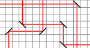
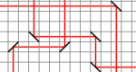

Laser
The image shows a room in which mirrors are placed. The Beaver starts a laser beam from the corner. The laser is reflected in the mirrors according to the mirror angle.
The Beaver wants to add Only one mirrors so that the laser beam reaches the gray corner through few mirrors as possible. Click on the drawing to place this new mirror. Note that you can not choose the angle of the mirror.
 
